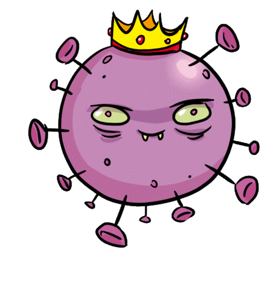

Covid-19

Esta pagina tem o intuito de mostrar os principais sintomas e o cuidados que devemos tomar caso supeite de se obter o virus Covid-19 virus Covid-19, A COVID-19 afeta diferentes pessoas de diferentes maneiras. A maioria das pessoas infectadas apresentará sintomas leves a moderados da doença e não precisarão ser hospitalizadas. Navegue na pagina pare receber mais informações e enteder mais o que é esse tal covid-19 .
Sintomas
A COVID-19 afeta diferentes pessoas de diferentes maneiras. A maioria das pessoas infectadas apresentará sintomas leves a moderados da doença e não precisarão ser hospitalizadas. Sintomas mais comuns:febre, tosse seca, cansaço. Em média, os sintomas aparecem após 5 ou 6 dias depois de ser infectado com o vírus. Porém, isso pode levar até 14 dias. Não se sabe. Já existem alguns estudos preliminares sobre quanto tempo o vírus que causa a COVID-19 sobrevive na superfície -
Cuidados
Use máscaras de proteção em lugares públicos ou quando for conversar com alguém; Ao tossir ou espirrar, use lenços de papel e, em seguida, jogue-os no lixo ou cubra a boca e o nariz utilizando o braço; Evite cumprimentos com abraços, apertos de mão e beijos; Evite visitas a entes queridos caso esteja gripado